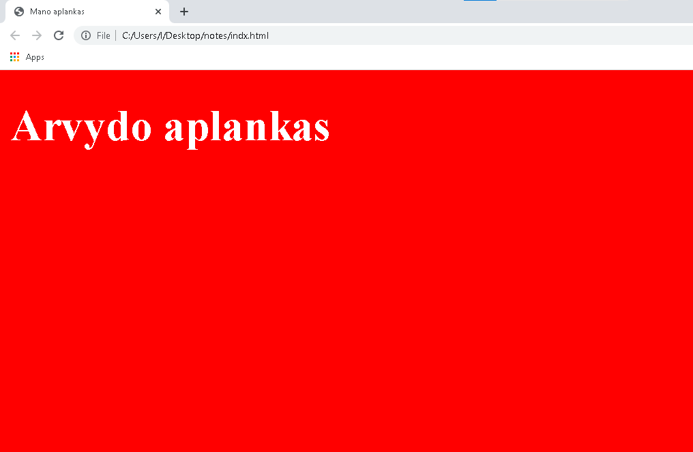

Top secret!
Užduotis:
- Terminale su komanda (cd) nueiti į Desktop direktoriją
- Desktop'e su komanda (mkdir) sukurti aplanką/folderį pavadinimu mano_aplankas
- Su komanda (cd) nueiti į savo sukurtą aplanką/folderį
- Su komanda (code . ) atidaryti savo aplanką/folderį su Visual Studio Code programa. (Jeigu neatidaro kviesti mokytoją)
- Visual Studio Code programoje sukurti file'ą pavadinimu index.html ir tame file sukurti HTML skiletą. Išsaugoti file'ą
- Index.html file'o tag'e
<title> </title> pakeisti pavadinimą į Mano aplankas.
- Index.html file'o tag'e
<body> </body> sukurti tag'ą <h1> </h1> ir jame parašyti savo vardą ir žodį aplankas pvz.: Lino aplankas ir išsaugoti
- Visual Studio Code programoje sukurti aplanką/folderį pavadinimu css
- Visual Studio Code programoje css aplanke/folderyje sukurti file'ą pavadinimu main.css
- index.html file sujungti index.html ir main.css file'us hint:
(link:css)
- main.css file parašyti komandą, kuri pakeistų tag'o html (foną) background'ą į raudoną
- main.css file parašyti komandą, kuri pakeistų tag'o h1 (spalvą) color į baltą
- Parodyti savo rezultatą naršyklėje
Mano gavosi toks :)

II pamokos CSS kodas
* {
box-sizing: border-box;
scroll-behavior: smooth;
}
body {
margin: 0;
padding: 0;
display: flex;
color: #1c1c1c;
font-family: "Roboto", sans-serif;
}
nav {
height: 100vh;
background: #eee;
flex-basis: 16rem;
border-right: 2px solid #dedede;
}
nav header,
section header {
padding: .5rem 2rem;
font-size: 1.8rem;
}
nav ul {
padding-left: 0;
margin: 0;
}
nav li {
list-style: none;
border-top: 2px solid #dedede;
padding: .5rem 0;
}
nav a {
text-decoration: none;
margin: 2.8rem;
color: #1c1c1c;
font-weight: 300;
}
main {
background: #fdfdfd;
flex: 1;
height: 100vh;
width: 100%;
overflow-y: scroll;
}
h1,
h2,
h3 {
font-weight: 400;
}
h2 {
margin-top: 1rem;
}
section h2 {
margin-top: 2rem;
}
p {
padding: 0 .8rem;
line-height: 1.6;
font-weight: 300;
font-size: 1rem;
}